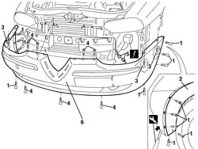
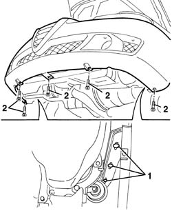
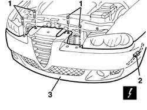

7210E10 R.R. FRONT BUMPER
- Path
- Procedures > 72 PANELS AND FRAME > 7210 REMOVING REFITTING > 7210E external parts > 7210E10 R.R. FRONT BUMPER
- Kind
- repair procedure (removal / refitting; the operation number is the code)
- Applies to
- all engines; all production periods
- Interactive page
- https://sloeber94.github.io/elrnDB-a156/en/#/3239044
Applies to: all engines; production: fino a 03/98, da 04/98 a 02/99, da 03/99 a 01/00, da 02/00 a 01/01, da 02/01 a 02/02, da 03/02 a 09/03
 Removing
Removing
 Refitting
Refitting7055A43 central front grille - r r
7055A41 RIGHT FRONT GRILLE - R.R. (right and left)
It is advisable to place the vehicle on a lift.
1. Working on both sides of the car, undo the bolts securing the end of the front bumper.
2. Remove the additional wheelarches from the front bumpter, using the special tool in the areas of the removed bolts.
 | Name | Country |
|---|---|---|
2 | Scraper blade | 1.823.014.000 |
3. Working from the bottom, undo the bolts securing the bumper to the wing.
4. Undo the bumper's central bolts.
5. Move the bumper slightly and disconnect the electrical connection.
 | Name | Connector |
|---|---|---|
1 | Front fog lamp connection |
6. With the aid of a second operator, recover the bumper.

Applies to: all engines; production: fino a 03/98, da 04/98 a 02/99, da 03/99 a 01/00, da 02/00 a 01/01, da 02/01 a 02/02, da 03/02 a 09/03
Refitting
RemovingCheck that the bumper is undamaged.
Connect the electrical connection for the front fog lamps wiring.
Fit the bumper.
Tighten the bumper's central bolts.
Working from the bottom, tighten the bolts securing the bumper to the wing.
Fit the additional wheelarch on the bumper.
Tighten the bolts securing the ends of the front bumper.
7055A41 RIGHT FRONT GRILLE - R.R. (right and left)
Applies to: all engines; all production periods
Removing
RefittingPosition the vehicle on a lift and raise it.
7055B42 Additional FRONT WHEEL ARCH (one), left or right - R.R. (left and right)
7055A41 RIGHT FRONT GRILLE - R.R. (left and right)
1. Work on both sides of the vehicle and undo the upper side bolts fixing the bumper.
2. Undo the lower bolts fixing the bumper.

Applies to: all engines; all production periods
Lower the vehicle.
1. Undo the upper bumper fixing bolts.
2. Disconnect the electrical connection for the fog lights bridge.
| Name | Connector |
|---|---|---|
2 | Front fog lamp connection |
3. Remove the bumper with the assistance of a second mechanic.

Applies to: all engines; all production periods
Refitting
RemovingCheck that the bumper is undamaged.
Connect the electrical connection.
Position the bumper and secure it using the bolts.
7055A41 RIGHT FRONT GRILLE - R.R. (left and right)
7055B42 Additional FRONT WHEEL ARCH (one), left or right - R.R. (left and right)
Topics linked from this page (4)
- 7055A41 RIGHT FRONT GRILLE - R.R.
- 7055A43 central front grille - r r
- 7055B42 Additional FRONT WHEEL ARCH (one), left or right - R.R.
- D50 Front fog lamp connection
Topics that link to this page (32)
- 1004B10 power unit with manual gearbox - r + r
- 1020D36 flywheel end oil seal - replace for manual gearbox with hydraulic selection versions
- 1024B11 engine flywheel - r r for manual gearbox with hydraulic selection versions
- 1048A23 cold air intake - r r
- 1048A57 lower resonator device - r r
- 1048B22 air delivery sleeve from heat exchanger to intake manifold - r + r
- 1048B48 heat exchanger duct - r r
- 1048B50 turbo charger intercooler - r + r
- 1084C34 engine oil cooling radiator - r + r
- 1084C36 Engine oil cooling RADIATOR mounting BRACKET - R.R.
- 1084C40 Air DUCT for engine oil cooling radiator - R.R .
- 1088B20 engine cooling radiator - r + r
- 1088B32 engine cooling radiator support beam - r r
- 1810A20 clutch - r + r
- 1810A28 clutch - r r for manual gearbox with hydraulic selection versions
- 1820A24 thrust bearing linkage - r + r
- 2110A10 manual gearbox and differential - r + r
- 2110A11 manual gearbox with differential - r r for versions with hydraulic selection
- 4130B49 return pipe from power steering case to heat exchanger pipe r r
- 4130B52 heat exchanger pipe - r+r
- 4130B54 return pipe from heat exchanger pipe to power steering fluid resevior r r
- 5040A40 air conditioner condenser - r+r
- 5040A50 pipe from compressor to air conditioner condenser - r+r
- 5040A60 pipe from condenser to evaporator (expansion pipe) - r+r
- 5040A73 compressor inlet pipe - r r
- 5040B14 air conditioner system multi-level pressure switch - r+r
- 5540B70 Left front LIGHT CLUSTER with direction indicator - R.R.
- 5540B71 Right front LIGHT CLUSTER with direction indicator - R.R.
- 5550B30 l/h or r/h horn (one) - r+r
- 7055A40 radiator shield - r r
- 7055B08 (One) GRILLE on front bumper - R.R.
- 7055B10 Front BUMPER - R.R.